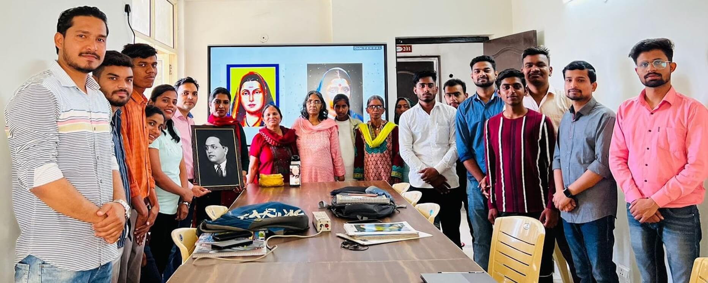
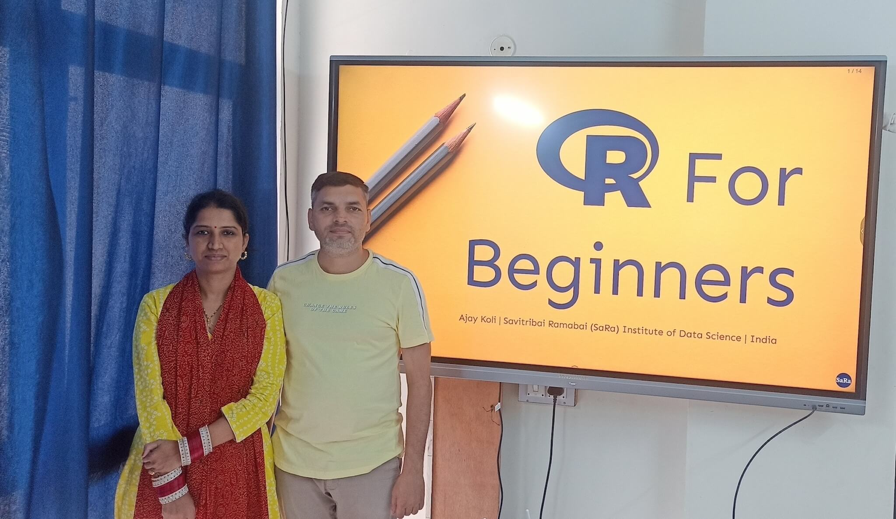
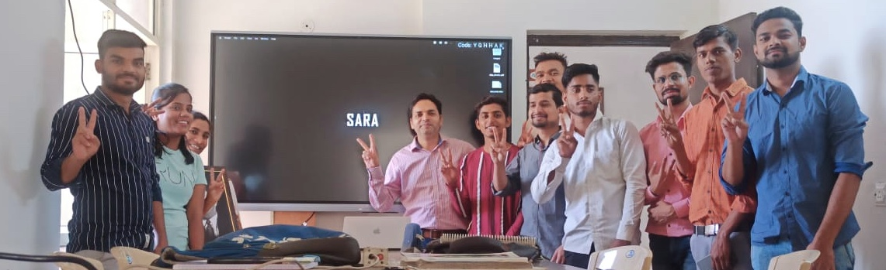

Mission
SARA Institute was founded in April 2023 with a strong foundation of social purpose. Our mission is to empower underrepresented communities through purposeful education and research. We are dedicated to fostering a dynamic learning environment that nurtures creativity, critical thinking, and personal growth. We aim to cultivate a vibrant community where individuals of all backgrounds can thrive, learn, and contribute positively to society.

Courses
All our courses are offered free of charge, ensuring accessibility for everyone.

Computer Skills
Learning computer skills enhances employability, facilitate efficient communication, information retrieval, and collaboration.

Data Science
Uncovering hidden patterns to drive decision making and innovation using data science education.

Research Methods
Scholars can Learn a systematic approach to investigate, analyse, and interpreting information quantitative and qualitative.

English Language
Learning English enhanced global communication, opens doors to diverse cultures, facilitates travel, and provides a competitive edge in the global job market.

Community
At SARA, we believe in the power of giving back and creating a positive impact beyond our immediate community. Our commitment goes beyond education and extends to actively contributing to the betterment of society. Through various initiatives and programs, we aim to pay it forward and make a meaningful difference.
Thanks
A good organization is built by happy & well-supported people.
Thank you for being a part of the SARA!

Dr. Ajay Koli, PhD
Founder & Executive Director, SARA.
Dr. Kiran Koli, PhD
Founder & Director, SARA.
Your support and participation are invaluable
as we embark on this journey together.